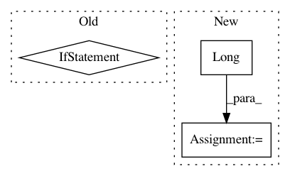

3795eabbdc08e59fe43622a0e1bffe3916332f0f,onmt/modules/ImageEncoder.py,ImageEncoder,forward,#ImageEncoder#Any#Any#,52
Before Change
for row in range(input.size(2)):
inp = input[:, :, row, :].transpose(0, 2)\
.transpose(1, 2)
if input.is_cuda:
pos_emb = self.pos_lut(
Variable(torch.cuda.LongTensor(batchSize).fill_(row)))
else:
pos_emb = self.pos_lut(
Variable(torch.LongTensor(batchSize).fill_(row)))
with_pos = torch.cat(
(pos_emb.view(1, pos_emb.size(0), pos_emb.size(1)), inp), 0)
outputs, hidden_t = self.rnn(with_pos)
all_outputs.append(outputs)
After Change
for row in range(input.size(2)):
inp = input[:, :, row, :].transpose(0, 2)\
.transpose(1, 2)
row_vec = torch.Tensor(batchSize).type_as(input).long().fill_(row)
pos_emb = self.pos_lut(Variable(row_vec))
with_pos = torch.cat(
(pos_emb.view(1, pos_emb.size(0), pos_emb.size(1)), inp), 0)
outputs, hidden_t = self.rnn(with_pos)
all_outputs.append(outputs)
In pattern: SUPERPATTERN
Frequency: 4
Non-data size: 3
Instances
Project Name: OpenNMT/OpenNMT-py
Commit Name: 3795eabbdc08e59fe43622a0e1bffe3916332f0f
Time: 2017-12-11
Author: dengyuntian@gmail.com
File Name: onmt/modules/ImageEncoder.py
Class Name: ImageEncoder
Method Name: forward
Project Name: OpenNMT/OpenNMT-py
Commit Name: 625451ab74f1942eb951337554d72005076a51b3
Time: 2017-12-12
Author: dengyuntian@gmail.com
File Name: onmt/Translator.py
Class Name: Translator
Method Name: translateBatch
Project Name: OpenNMT/OpenNMT-py
Commit Name: a5763a81a2180e1d99f678d31f0fb7b9c26f4dff
Time: 2017-11-17
Author: pltrdy@gmail.com
File Name: onmt/modules/CopyGenerator.py
Class Name: CopyGeneratorLossCompute
Method Name: compute_loss
Project Name: OpenNMT/OpenNMT-py
Commit Name: 017517d06144919555f9d991f13639ee4cc4babb
Time: 2017-11-17
Author: pltrdy@gmail.com
File Name: onmt/modules/CopyGenerator.py
Class Name: CopyGeneratorLossCompute
Method Name: compute_loss